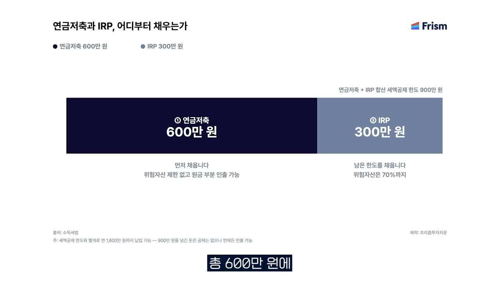
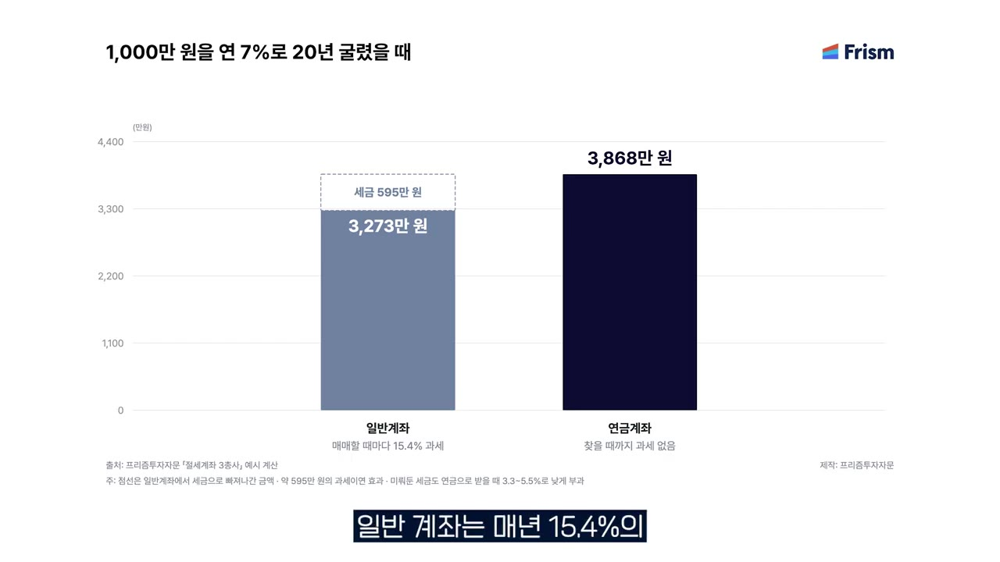
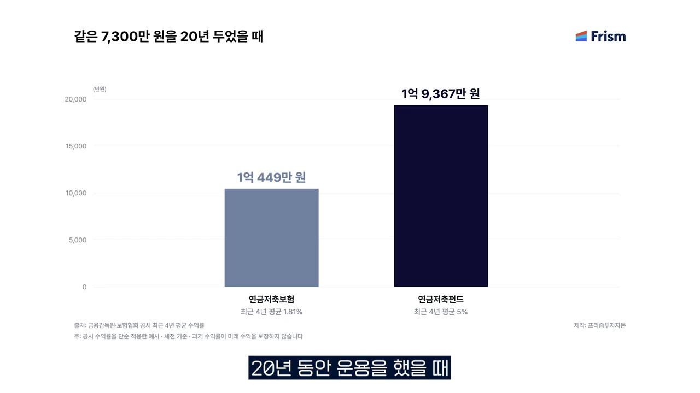
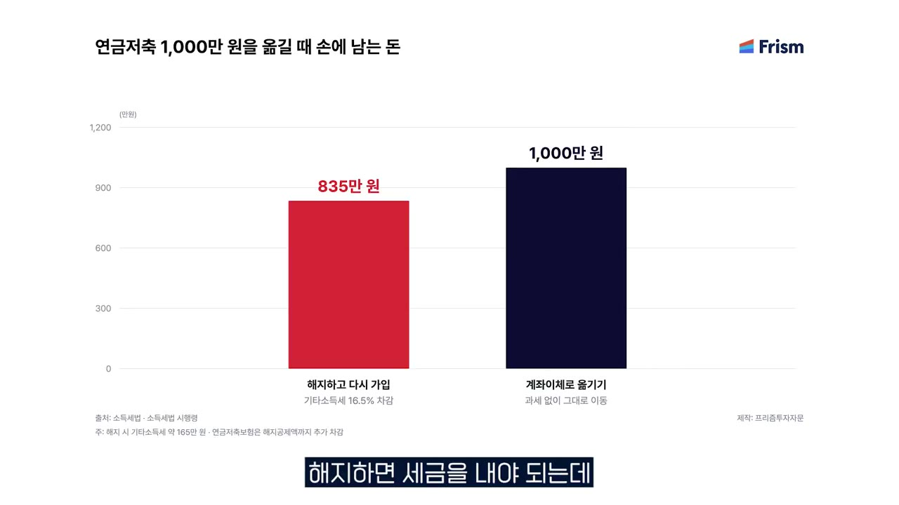

내 돈 2,000만원, 어디에 넣어야 가장 유리할까? | 연금저축·IRP·ISA [실버리치 Ep.5]
🎙️ 자막 대신 영상 음성을 받아써서 정리 (ko (음성 받아쓰기·GPU))
▶ 원본 영상 보기한눈에 보기
- 절세계좌는 세 가지입니다: ISA는 목돈을 만드는 계좌, 연금저축은 노후 자금을 모으는 계좌, IRP는 퇴직금을 굴리는 계좌입니다.
- 연금저축 600만 원과 IRP 300만 원을 합쳐 연 900만 원까지 연말정산 세액공제를 받고, 납입은 연 1,800만 원까지 할 수 있습니다.
- 홍춘욱 박사는 젊은 층에는 ISA, 40~50대에는 연금저축·IRP 비중 확대를 추천합니다. 은퇴가 가까울수록 1,800만 원 한도를 채우라고 합니다.
- 공제받지 않은 추가 납입분은 55세 이전에도 페널티 없이 뺄 수 있고, 연금펀드를 담보로 60~70% 대출도 받을 수 있습니다(영상 속 주장).
- 연금저축보험의 평균 수익률은 연 1.8%, 연금저축펀드는 연 5% 수준입니다. 해지하지 말고 증권사 연금저축펀드로 이전하라고 권합니다.
이런 분께 도움이 됩니다
- 연금저축·IRP 계좌를 만들어만 두었거나, 오래된 연금저축보험을 그대로 두고 있는 직장인
- 퇴직이 몇 년 안 남아 노후 자금을 빨리 늘려야 하는 40~50대
- ISA·연금저축·IRP 중 어디에 먼저 넣을지 순서를 정하고 싶은 분
핵심 내용
계좌는 만들고 돈은 안 넣는다 (0:00)
금융감독원 통계에 따르면 연금계좌 10개 중 돈이 들어 있는 계좌는 4개뿐입니다. 약 60%는 만들기만 하고 쓰지 않는다는 뜻입니다.
💡 연말정산에서 큰돈을 돌려받을 수 있는데도 절반 넘게 놓치고 있다.
ISA: 목돈 만드는 절세 계좌 (0:45)
- 납입 한도: 연 2,000만 원. 세법 개정안이 통과되면 새 ISA가 생겨 연 4,000만 원까지 넣을 수 있다고 하지만, 영상 시점에는 아직 개정 전입니다.
- 비과세: 이자·배당소득세를 200만~400만 원까지 내지 않습니다. 200만 원과 400만 원의 차이는 가입 유형에 따른 것으로, 일반형과 서민형 등이 있습니다(보충).
- 초과분: 비과세 한도를 넘는 이자·배당소득은 9.9% 분리과세(다른 소득과 합치지 않고 따로 낮은 세율로 과세)됩니다.
- 금융소득종합과세 회피: 이자·배당이 연 2,000만 원을 넘으면 근로소득과 합산돼 세금이 크게 늘고 건강보험료도 오릅니다. ISA를 쓰면 이 문제를 피할 수 있습니다.
연금저축: 노후 자금 계좌 (1:46)
- 넣는 동안 연말정산 세액공제를 받습니다.
- 운용 중 생기는 이자·배당소득세를 내지 않습니다(과세 이연).
- 55세 이후 연금으로 받으면 인출 나이에 따라 3.3~5.5%만 과세됩니다.
💡 넣을 때 공제, 굴릴 때 비과세, 꺼낼 때 저율과세. 박사는 "최고의 절세 계좌"라고 부릅니다.
IRP: 퇴직금을 연금으로 굴리는 계좌 (2:28)
- 퇴사하면 퇴직금이 IRP로 들어옵니다. 대부분 바로 전액을 인출하는데, 이때 퇴직소득세가 많이 나갑니다.
- IRP에 두었다가 연금 형태로 받으면 퇴직소득세보다 세금이 훨씬 적습니다.
💡 퇴직금은 IRP로 받아 연금으로 전환하라.
세액공제 한도와 인출 페널티 (2:52)
연금저축 600만 원에 IRP 300만 원을 더해 총 900만 원까지 연말정산 혜택을 받습니다.

| 구분 | ISA | 연금저축 | IRP |
|---|---|---|---|
| 성격 | 목돈 만들기(재테크) | 노후 자금 | 퇴직금 운용 |
| 납입 한도 | 연 2,000만 원 | 연금저축·IRP 합산 연 1,800만 원 | (연금저축과 합산) |
| 연말정산 공제 | 없음 | 600만 원까지 | +300만 원 (합계 900만 원) |
| 세금 혜택 | 200만~400만 원 비과세, 초과분 9.9% 분리과세 | 과세 이연, 55세 이후 3.3~5.5% | 과세 이연, 연금 수령 시 퇴직소득세보다 낮음 |
| 원금 인출 | 페널티 없음 | 공제받은 돈은 페널티 있음 | 공제받은 돈은 페널티 있음 |
연금저축과 IRP는 나라가 세액공제를 해 준 만큼, 중도에 인출하면 세금을 더 낼 수 있습니다. 그래서 가입은 신중하게 해야 합니다. 영상에는 페널티 세율이 나오지 않는데, 일반적으로 공제받은 원금과 운용수익에 기타소득세 16.5%가 붙습니다(보충).
나이별 추천과 복리 효과 (3:48)
- 20~30대: ISA 가입을 추천합니다.
- 40~50대: 연금저축과 IRP 비중을 높이라고 합니다.
예시는 1,000만 원을 연 7%로 20년 굴린 경우입니다.
| 계좌 | 20년 뒤 금액 |
|---|---|
| 일반 계좌 (매년 이자·배당소득세 15.4% 차감) | 약 3,200만 원 |
| 연금 계좌 (인출 전까지 세금 없음) | 약 3,868만 원 |

💡 세금을 미루면 수익이 고스란히 다시 굴러간다. 연금 계좌는 원금의 약 4배가 된다.
은퇴가 가까울수록 1,800만 원을 채워라 (4:35)
- 박사는 퇴직이 몇 년 안 남았다면 "그럴수록 더 해야 한다"고 말합니다.
- 공제 한도 900만 원과 별개로 900만 원을 더 넣어 연 1,800만 원까지 납입할 수 있습니다.
- 추가 900만 원은 공제는 없지만 이자·배당소득세가 미뤄지는 효과는 똑같이 받습니다. 공제받지 않았으니 인출도 자유롭습니다.
- 권하는 순서는 연금저축·IRP에 연 1,800만 원을 먼저 채우고, 남는 돈을 ISA로 운용하는 것입니다.
💡 연금계좌를 연말정산용으로만 생각하지 말라.
55세까지 돈이 묶이지 않나? (5:35)
박사는 두 가지 해법을 제시합니다.
- 연금펀드 담보 대출: 증권사의 개인연금 펀드로 운용 중이면, 증권사마다 다르지만 적립금의 60~70%까지 대출해 줍니다. 급한 돈을 막을 수 있습니다.
- 박사가 ETF를 운용할 수 있는 증권사 연금저축펀드를 권하는 이유이기도 합니다. 은행·보험사에 있는 연금저축도 증권사로 이전할 수 있다고 합니다.
- 공제받지 않은 돈 먼저 빼기: 연말정산 혜택을 받은 돈은 인출할 때 페널티가 있지만, 공제 한도를 넘겨 추가로 넣은 돈은 페널티가 없습니다.
💡 1,800만 원을 채워 두고, 꺼낼 때는 공제받지 않은 900만 원부터 빼면 55세 전에도 페널티가 없다.
오래된 연금저축보험과 옛 직장 IRP 처리 (6:58)
- 연금저축 적립금의 약 60%가 아직 보험에 들어 있습니다. 보험은 보장 기능은 있지만 수익률이 낮습니다.
- 평균 수익률은 연금저축보험 연 1.8%, 증권사 연금저축펀드 연 5% 정도입니다. 어느 기간을 기준으로 보느냐에 따라 달라질 수 있습니다.
평균 적립금 약 7,300만 원을 20년간 운용하면 차이가 이렇게 벌어집니다.
| 운용 방식 | 20년 뒤 |
|---|---|
| 연금저축보험 (연 1.8%) | 약 1억 400만 원 |
| 연금저축펀드 (연 5%) | 2억 원 가까이 |

- 연금저축보험을 해지하면 세금을 내야 하므로, 해지하지 말고 계좌 이전으로 연금저축펀드에 옮기라고 권합니다. 증권사에 물어보면 잘 알려 준다고 합니다.

- 옛 직장 IRP도 해지하지 말고 퇴직연금으로 전환해 인출하라고 합니다.
정리 (8:49)
- 젊은 층은 ISA 연 2,000만 원 한도를 채우도록 노력합니다.
- 40~50대는 연금저축·IRP 투자를 꼭 고민합니다.
- 돈이 묶인다는 두려움이 있지만, 그 덕분에 장기투자 습관이 생깁니다. 900만 원 공제 한도를 넘긴 돈은 인출해도 됩니다.
따라 해보기
준비물
- 증권사 계좌: 연금저축펀드, 필요하면 IRP·ISA
- 기존 연금저축보험이나 은행 연금저축, 옛 직장 IRP가 있다면 가입 정보
- 비용: 계좌 개설 자체에 대한 언급은 없음. 영상에서 증권사 이름은 언급되지 않음.
단계별 방법
- 연금저축펀드 개설
- 기존 연금 이전
- 옛 IRP 유지
- 공제 한도 채우기
- 추가 900만 원 납입
- 남는 돈은 ISA
- 급할 때 인출 순서
- 1연금저축펀드 개설
증권사에서 ETF로 운용할 수 있는 연금저축펀드 계좌를 엽니다. (5:50)
- 2기존 연금 이전
은행·보험사의 연금저축은 해지하지 말고 증권사 연금저축펀드로 '계좌 이전'을 신청합니다. 신청은 증권사에 문의합니다. (8:10)
- 3옛 IRP 유지
옛 직장 IRP는 해지하지 말고 연금으로 전환해 받을 준비를 합니다. 퇴직금도 IRP로 받습니다. (8:25)
- 4공제 한도 채우기
연금저축 600만 원 + IRP 300만 원, 연 900만 원을 넣어 연말정산 세액공제를 받습니다. (2:52)
- 5추가 900만 원 납입
여유가 있으면 연금계좌에 900만 원을 더 넣어 연 1,800만 원을 채웁니다. 은퇴가 가까운 40~50대에게 특히 권합니다. (4:50)
- 6남는 돈은 ISA
그래도 남는 돈은 ISA(연 2,000만 원 한도)로 운용합니다. 젊은 층은 ISA부터 시작합니다. (5:25)
- 7급할 때 인출 순서
돈이 필요하면 공제받지 않은 추가 납입분부터 빼거나, 연금펀드 담보 대출(60~70%)을 이용합니다. (6:40)
따라 할 수 있는지 점검
- ✅ 바로 따라 할 수 있음: 4·5·6단계(납입 한도와 순서)는 영상 내용만으로 충분합니다.
- ⚠️ 1단계 「연금저축펀드 개설」: 증권사 선택 기준과 앱 메뉴 위치가 영상에 없습니다. → 이용 중인 증권사 앱에서 '연금저축' 메뉴로 비대면 개설하면 됩니다(보충). 어떤 ETF를 살지도 영상에 나오지 않습니다.
- ⚠️ 2단계 「기존 연금 이전」: 이전 절차가 나오지 않습니다. → 일반적으로 옮겨 갈 증권사에 이전 신청을 하면 기존 금융회사에서 확인 연락이 옵니다(보충). 보험은 가입 기간에 따라 해지 공제(손실)가 있을 수 있으니, 이전 전에 보험사에서 이전 시 받을 금액을 확인합니다(보충).
- ⚠️ 4단계 「공제 한도 채우기」: 공제율이 영상에 없습니다. → 일반적으로 총급여에 따라 납입액의 13.2% 또는 16.5%입니다(보충). 국세청 홈택스에서 확인합니다.
- ⚠️ 7단계 「급할 때 인출 순서」: 공제받지 않은 납입분이라는 점을 증명하려면 연말정산 때 '세액공제 미적용 납입액'으로 처리돼 있어야 합니다(보충). 증권사에 확인합니다.
- ❓ IRP는 일반적으로 법에 정한 사유가 아니면 일부 인출이 안 되고 전액 해지만 가능합니다(보충). 영상의 "추가 납입분은 자유롭게 인출"은 연금저축 기준으로 보는 것이 안전합니다.
확인 방법
- 증권사 앱 연금저축 계좌에서 이전받은 금액이 입금됐는지, 상품을 ETF·펀드로 매수했는지 확인합니다.
- 다음 해 연말정산 결과에서 연금계좌 세액공제 항목이 반영됐는지 확인합니다.
막히면
- 연금저축·IRP에서 공제받은 돈을 중도에 인출하면 페널티(추가 세금)가 있습니다. 넣기 전에 당장 쓸 돈인지 따져 봅니다.
- 연금저축보험을 해지하면 세금이 붙습니다. 해지가 아니라 '이전'으로 옮깁니다.
- 퇴직금을 한꺼번에 받으면 퇴직소득세가 큽니다. 연금으로 전환합니다.
기억할 숫자·인용
- 연금계좌 10개 중 돈이 들어 있는 계좌 4개, 방치 비율 약 60%
- ISA: 연 2,000만 원 한도(개정 시 4,000만 원), 200만~400만 원 비과세, 초과분 9.9% 분리과세
- 금융소득 연 2,000만 원 초과 시 종합과세, 건강보험료 상승
- 세액공제 한도: 연금저축 600만 + IRP 300만 = 900만 원, 총 납입 한도 1,800만 원
- 55세 이후 연금 수령 시 세율 3.3~5.5%, 일반 계좌 이자·배당세 15.4%
- 1,000만 원을 7%로 20년: 일반 계좌 약 3,200만 원 vs 연금 계좌 3,868만 원
- 연금저축보험 연 1.8% vs 연금저축펀드 연 5%. 7,300만 원을 20년 운용하면 1억 400만 원 vs 2억 원 가까이
- 연금저축 적립금 중 보험 비중 약 60%, 연금펀드 담보 대출 60~70%
- "연말정산용으로만 자꾸 이걸 생각하지 마시고요."
생각해볼 점
- 영상의 비교 조건: 펀드 연 5%, 7% 같은 수익률은 과거 평균이나 가정입니다. 펀드·ETF는 원금 손실이 날 수 있고, 보험의 1.8%와는 위험 수준이 다릅니다. 영상 속 수치는 미래 수익을 보장하지 않습니다.
- 영상 수치의 해석: 3,868만 원은 연금 계좌에서 꺼내기 전 금액입니다. 인출할 때 3.3~5.5%의 연금소득세가 붙으니 실제 차이는 영상 숫자보다 조금 작습니다(내 의견·보충). 또 "거의 4배"는 일반 계좌 대비가 아니라 원금 1,000만 원 대비입니다.
- 세법 변경 가능성: ISA 4,000만 원 확대처럼 세법이 바뀔 수 있습니다. 공제 한도·세율·IRP 인출 조건은 가입 시점에 금융회사나 국세청에서 다시 확인하는 것이 좋습니다(보충).
바로 해볼 일
- 내 연금저축·IRP·ISA 계좌와 올해 납입액 확인하기(공제 한도 900만 원 대비 얼마나 찼는지)
- 연금저축보험이 있다면 증권사에 연금저축펀드로 '이전'할 때 받을 금액과 절차 문의하기
- 옛 직장 IRP가 있다면 해지하지 않고 유지하고 있는지 확인하기